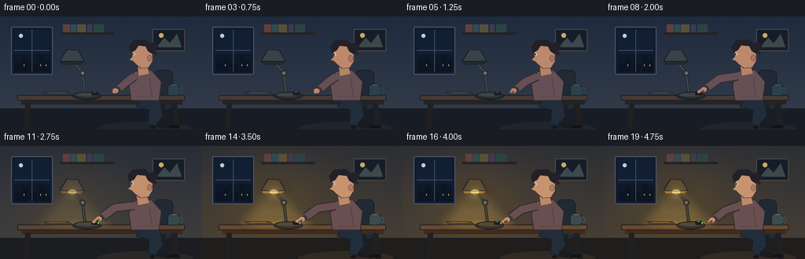
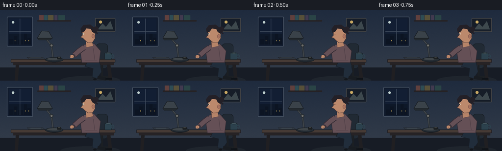

CODING AGENTS AS PIXEL WORLD MODELS
traex/GPT-5.6-Sol · motion_rationality_0039
点击播放 · 原生 RGB 像素
逐轮保存的候选
回放视频、检查图与代码变化。
每份候选均可单独播放。实际图片检查记录在下方工具轨迹中。
候选 01播放与检查图
点击播放 · 原生 RGB 像素


展开代码变化
--- 上一保存版本
+++ 本次保存版本
@@ -0,0 +1,260 @@
+from pathlib import Path
+import math
+import numpy as np
+from PIL import Image, ImageDraw, ImageFilter
+import artifact_io
+
+# Procedural, antialiased 2-D animation: a quiet evening workspace and a clearly
+# staged reach -> contact -> switch depression -> illumination -> release action.
+W, H, N = 256, 144, 20
+S = 4
+rng = np.random.default_rng(39)
+# Fixed fine paper-like texture, so it does not shimmer between frames.
+texture = rng.normal(0, 1.0, (H*S, W*S, 1))
+
+
+def sc_point(p):
+ return tuple(int(round(v*S)) for v in p)
+
+
+def smooth(t):
+ t = max(0.0, min(1.0, t))
+ return t*t*(3.0-2.0*t)
+
+
+def mix(a, b, t):
+ return tuple(int(round(x*(1-t)+y*t)) for x, y in zip(a, b))
+
+
+def ellipse(d, box, fill, outline=None, width=1):
+ d.ellipse(tuple(int(round(v*S)) for v in box), fill=fill,
+ outline=outline, width=max(1, int(width*S)))
+
+
+def rect(d, box, fill, outline=None, width=1, radius=0):
+ b = tuple(int(round(v*S)) for v in box)
+ if radius:
+ d.rounded_rectangle(b, radius=int(radius*S), fill=fill,
+ outline=outline, width=max(1, int(width*S)))
+ else:
+ d.rectangle(b, fill=fill, outline=outline, width=max(1, int(width*S)))
+
+
+def poly(d, points, fill, outline=None, width=1):
+ pts = [sc_point(p) for p in points]
+ d.polygon(pts, fill=fill)
+ if outline:
+ d.line(pts+[pts[0]], fill=outline, width=max(1, int(width*S)), joint='curve')
+
+
+def line(d, points, fill, width=1, joint='curve'):
+ d.line([sc_point(p) for p in points], fill=fill,
+ width=max(1, int(width*S)), joint=joint)
+
+
+def make_background(light):
+ hh, ww = H*S, W*S
+ yy, xx = np.mgrid[0:hh, 0:ww]
+ # Cool evening wall, becoming subtly warmer when the lamp comes on.
+ top = np.array(mix((31, 43, 62), (45, 47, 52), light), dtype=float)
+ bot = np.array(mix((53, 62, 75), (74, 65, 53), light), dtype=float)
+ q = (yy/(hh-1))[..., None]
+ arr = top*(1-q) + bot*q
+ # Warm localized ambient falloff around the lamp.
+ dist = ((xx/S-93)/105)**2 + ((yy/S-70)/78)**2
+ glow = np.exp(-2.0*dist)[..., None] * light
+ arr += glow*np.array([23.0, 13.0, -4.0])
+ arr += texture
+ return Image.fromarray(np.uint8(np.clip(arr, 0, 255)), 'RGB')
+
+
+def add_lighting(img, light):
+ if light <= 0:
+ return img
+ # Diffuse cone and pool are intentionally soft but spatially tied to shade.
+ beam = Image.new('RGBA', img.size, (0,0,0,0))
+ bd = ImageDraw.Draw(beam)
+ poly(bd, [(78,56), (105,56), (141,101), (47,101)],
+ (255, 213, 111, int(39*light)))
+ ellipse(bd, (42,84,145,111), (255, 201, 83, int(59*light)))
+ beam = beam.filter(ImageFilter.GaussianBlur(7*S))
+ return Image.alpha_composite(img.convert('RGBA'), beam).convert('RGB')
+
+
+def render(f):
+ if f <= 10:
+ light = 0.0
+ elif f == 11:
+ light = 0.62
+ elif f == 12:
+ light = 0.90
+ else:
+ light = 1.0
+ img = add_lighting(make_background(light), light)
+ d = ImageDraw.Draw(img)
+
+ # Window and distant night city.
+ rect(d, (14,13,67,74), (17,27,45), (73,85,101), 1.3, 2)
+ # sky gradient bands / panes
+ rect(d, (18,17,63,70), (18,30,51))
+ ellipse(d, (24,22,29,27), (190,207,205))
+ rect(d, (18,48,63,70), (14,24,40))
+ for bx, bh, bw in [(19,11,8),(28,17,7),(37,10,10),(49,22,6),(56,14,7)]:
+ rect(d, (bx,70-bh,bx+bw,70), (12,20,34))
+ if bx in (28,49,56):
+ rect(d, (bx+2,61,bx+3,63), (182,157,90))
+ line(d, [(40.5,17),(40.5,70)], (66,78,95), 1)
+ line(d, [(18,43),(63,43)], (66,78,95), 1)
+ # slim picture on wall
+ rect(d, (194,16,235,44), (22,29,40), (78,77,75), 1.2, 1)
+ poly(d, [(199,39),(209,27),(216,34),(225,22),(231,39)], (61,72,77))
+ ellipse(d, (202,21,208,27), (200,169,99))
+ # shelf and books
+ rect(d, (76,20,145,23), (37,34,37), None, radius=1)
+ for x,wid,col in [(80,9,(96,64,61)),(90,7,(46,76,83)),(98,11,(87,80,57)),(111,6,(65,58,79)),(119,13,(42,68,70))]:
+ rect(d, (x,10,x+wid,20), col, None, radius=.6)
+
+ # Rug/floor hint and chair behind the body.
+ rect(d, (0,117,256,144), mix((23,28,37),(31,30,29),light))
+ ellipse(d, (123,134,245,153), mix((31,37,45),(49,42,34),light))
+ # chair back and base
+ rect(d, (196,68,220,119), (33,42,52), (22,28,34), 1.2, 7)
+ line(d, [(208,112),(208,135)], (27,31,35), 4)
+ line(d, [(196,136),(221,136)], (27,31,35), 3)
+ line(d, [(199,135),(193,141)], (27,31,35), 2)
+ line(d, [(217,135),(224,141)], (27,31,35), 2)
+ ellipse(d, (190,139,197,143), (19,23,28)); ellipse(d, (221,139,228,143), (19,23,28))
+
+ # Desk, with warmer reflected color only after illumination.
+ desk_top = mix((70,58,53), (103,73,48), light)
+ desk_edge = mix((38,35,37), (62,43,31), light)
+ rect(d, (22,100,235,107), desk_top, (29,29,34), 1, 1)
+ rect(d, (27,107,232,112), desk_edge)
+ poly(d, [(32,111),(39,111),(36,144),(30,144)], (32,31,34))
+ poly(d, [(218,111),(225,111),(229,144),(222,144)], (32,31,34))
+
+ # Light pool reflected on desktop.
+ if light:
+ ov = Image.new('RGBA', img.size, (0,0,0,0)); od=ImageDraw.Draw(ov)
+ ellipse(od, (47,94,147,106), (255,201,91,int(67*light)))
+ ov=ov.filter(ImageFilter.GaussianBlur(4*S))
+ img=Image.alpha_composite(img.convert('RGBA'),ov).convert('RGB'); d=ImageDraw.Draw(img)
+
+ # Desk accessories establish surface depth.
+ poly(d, [(55,96),(87,96),(92,100),(59,100)], mix((47,55,64),(88,69,43),light), (26,29,34), .6)
+ line(d, [(62,97),(83,97)], mix((95,104,109),(181,141,77),light), .6)
+ # mug on far right, behind arm
+ rect(d, (213,87,228,101), mix((44,65,77),(58,76,76),light), (25,34,40), 1, 2)
+ ellipse(d, (216,86,226,89), mix((66,84,92),(92,98,85),light), (27,36,40), .7)
+ ellipse(d, (226,90,233,98), None, mix((44,65,77),(58,76,76),light), 2)
+
+ # Person: legs, torso and head. Slight forward lean accompanies the reach.
+ if f <= 3: reach=0.0
+ elif f <= 9: reach=smooth((f-3)/6)
+ elif f <= 12: reach=1.0
+ else: reach=1.0-0.58*smooth((f-12)/7)
+ bob = 0.35*math.sin(f*0.45)
+ lean = 1.7*reach
+ # legs below the desk
+ poly(d, [(178,106),(203,106),(207,126),(198,139),(188,137),(190,119),(173,115)], (33,45,59), (24,30,39), 1)
+ line(d, [(199,137),(216,140)], (24,28,33), 7)
+ line(d, [(215,140),(228,140)], (16,20,25), 4)
+ # torso sweater
+ sweater = mix((101,80,86),(112,78,68),0.35*light)
+ poly(d, [(171-lean*.2,70+bob),(192,68+bob),(205,83),(202,107),(167,107),(164,86)], sweater, (49,42,50), 1)
+ # subtle sweater fold lines
+ line(d, [(190,78),(193,101)], mix((78,62,70),(85,58,53),light*.3), 1)
+ line(d, [(174,102),(198,102)], mix((76,61,68),(84,57,51),light*.3), .7)
+ # neck
+ poly(d, [(175-lean,62+bob),(187-lean*.4,62+bob),(190,73+bob),(176-lean*.3,76+bob)],
+ mix((181,131,104),(201,150,108),light*.35), (75,54,51), .7)
+ # face profile looking left
+ skin=mix((188,137,108),(213,161,115),light*.45)
+ face=[(177-lean,34+bob),(187-lean*.4,35+bob),(194,42+bob),(194,57+bob),
+ (189,65+bob),(179-lean*.5,66+bob),(173-lean,61+bob),(169-lean,57+bob),
+ (164-lean,55+bob),(168-lean,51+bob),(168-lean,41+bob)]
+ poly(d, face, skin, (65,47,48), .8)
+ # ear, nose definition, mouth
+ ellipse(d, (187,49+bob,193,57+bob), mix((169,115,96),(194,139,101),light*.4), (100,68,62), .6)
+ line(d, [(165-lean,55+bob),(169-lean,56+bob)], (112,68,62), .65)
+ # eye follows hand/lamp; blink briefly at frame 2
+ if f == 2:
+ line(d, [(168-lean,48+bob),(172-lean,48.5+bob)], (39,35,39), .8)
+ else:
+ ellipse(d, (168-lean,46.5+bob,171.5-lean,49.5+bob), (235,224,202))
+ ellipse(d, (168.2-lean,47.1+bob,170.1-lean,49.1+bob), (32,35,39))
+ # hair silhouette and small tied-back shape
+ hair=(35,32,39)
+ poly(d, [(166-lean,46+bob),(164-lean,38+bob),(170-lean,30+bob),(184-lean*.3,29+bob),(194,37+bob),(194,48+bob),(188,44+bob),(185,38+bob),(176-lean,37+bob),(172-lean,43+bob)], hair)
+ ellipse(d, (190,33+bob,201,44+bob), hair)
+ line(d, [(190,40+bob),(199,48+bob)], hair, 3)
+
+ # Lamp is in front of the back wall but behind the reaching fingers.
+ # articulated arm and joints
+ lamp_dark = mix((40,46,52),(51,48,43),light)
+ line(d, [(108,97),(105,72),(91,55)], lamp_dark, 4)
+ line(d, [(108,97),(105,72),(91,55)], mix((79,84,88),(94,80,58),light), 1.2)
+ ellipse(d, (101,68,109,76), lamp_dark); ellipse(d, (103,70,107,74), (112,112,108))
+ # base
+ ellipse(d, (92,96,129,106), mix((35,42,49),(57,52,44),light), (19,25,30), 1)
+ ellipse(d, (96,97,125,102), mix((62,68,72),(87,72,51),light), None)
+ # shade and bulb opening
+ poly(d, [(85,42),(99,43),(107,57),(76,57)], mix((58,66,73),(97,79,53),light), (24,29,34), 1)
+ poly(d, [(76,57),(107,57),(102,61),(79,61)], mix((35,41,46),(174,125,61),light), (23,28,32), .7)
+ if light:
+ ellipse(d, (86,55,98,62), mix((83,82,72),(255,224,137),light), (108,80,44), .5)
+ glow=Image.new('RGBA',img.size,(0,0,0,0)); gd=ImageDraw.Draw(glow)
+ ellipse(gd,(80,49,105,70),(255,213,112,int(115*light)))
+ glow=glow.filter(ImageFilter.GaussianBlur(7*S)); img=Image.alpha_composite(img.convert('RGBA'),glow).convert('RGB'); d=ImageDraw.Draw(img)
+ # redraw crisp bottom lip over glow
+ line(d, [(76,57),(107,57),(102,61),(79,61),(76,57)], (72,54,40), .7)
+ # Rocker switch: clearly depresses under fingertip at the action's causal instant.
+ pressed = f in (10,11,12)
+ sy = 96.1 if pressed else 95.0
+ rect(d, (116.5,sy,124.5,100.2), (28,31,33), (15,18,20), .7, 1)
+ poly(d, [(118,sy+.3),(123,sy+.3),(122.3,sy+1.7),(118.4,sy+1.7)],
+ (65,67,65) if not light else (91,105,75))
+ if light:
+ ellipse(d,(124,97,126,99),(126,207,104))
+
+ # Reaching arm. All three joints travel continuously, and the index finger
+ # arrives exactly at the rocker before illumination begins.
+ shoulder=(171-lean*.15,76+bob)
+ elbow=(160*(1-reach)+146*reach, 84*(1-reach)+79*reach+bob)
+ wrist=(151*(1-reach)+130*reach, 92*(1-reach)+90.5*reach+bob)
+ sleeve_hi=mix((111,88,94),(125,86,73),light*.3)
+ line(d,[shoulder,elbow,wrist],(54,45,54),12)
+ line(d,[shoulder,elbow,wrist],sweater,9)
+ # cuff
+ line(d,[(wrist[0]-2,wrist[1]-2),(wrist[0]+2,wrist[1]+3)],(60,51,59),4)
+ # Palm travels and rotates from relaxed to horizontal.
+ palm=(wrist[0]-4.6,wrist[1]+2.2)
+ ellipse(d,(palm[0]-4,palm[1]-3.2,palm[0]+4.3,palm[1]+3.8),skin,(86,57,52),.65)
+ # Index extends progressively toward the switch; fingertip is (119,95) at reach=1.
+ tip=(145*(1-reach)+119*reach, 96*(1-reach)+(95.8 if not pressed else 96.6)*reach)
+ line(d,[(palm[0]-1,palm[1]),tip],(91,59,53),4.4)
+ line(d,[(palm[0]-1,palm[1]-.5),tip],skin,3.2)
+ ellipse(d,(tip[0]-1.7,tip[1]-1.7,tip[0]+1.7,tip[1]+1.7),skin)
+ # curled remaining fingers
+ if reach>.25:
+ line(d,[(palm[0],palm[1]+1),(palm[0]-3.8,palm[1]+3.2)],(100,65,57),1.1)
+ line(d,[(palm[0]+1,palm[1]+1.5),(palm[0]-2,palm[1]+4)],(100,65,57),1.0)
+
+ # Small restrained click accent only at the exact press frame.
+ if f == 10:
+ for a in (-1.0,-.25,.55):
+ x1=120+math.cos(a)*4; y1=94+math.sin(a)*4
+ x2=120+math.cos(a)*6; y2=94+math.sin(a)*6
+ line(d,[(x1,y1),(x2,y2)],(184,178,137),.75)
+
+ # Downsample for clean antialiasing and return strict RGB.
+ img=img.resize((W,H),Image.Resampling.LANCZOS).convert('RGB')
+ return np.asarray(img,dtype=np.uint8)
+
+
+def main():
+ frames=np.stack([render(i) for i in range(N)],axis=0)
+ artifact_io.save(frames,Path(__file__).resolve().parent)
+
+if __name__=='__main__':
+ main()
可观测工具轨迹
实际执行的命令与返回图片。
命令 1exit 0
/bin/bash -lc "cat prompt.txt && printf '\\n---RULES---\\n' && cat GENERATION_RULES.md && printf '\\n---SPEC---\\n' && cat task_spec.json"
命令 2exit 0
/bin/bash -lc "find . -maxdepth 2 -type f -printf '%p\\n' | sort && printf '\\nTOOLS\\n' && command -v ffmpeg || true && command -v python3 || true && python3 - <<'PY'
try:
import cv2; print('cv2',cv2.__version__)
except Exception as e: print('no cv2',e)
try:
from PIL import Image; print('PIL ok')
except Exception as e: print('no PIL',e)
try:
import numpy; print('numpy',numpy.__version__)
except Exception as e: print('no numpy',e)
PY"命令 3exit 0
/bin/bash -lc 'cat artifact_io.py'
命令 4exit 0
/bin/bash -lc "cat > generate.py <<'PY'
from pathlib import Path
import math
import numpy as np
from PIL import Image, ImageDraw, ImageFilter
import artifact_io
# Procedural, antialiased 2-D animation: a quiet evening workspace and a clearly
# staged reach -> contact -> switch depression -> illumination -> release action.
W, H, N = 256, 144, 20
S = 4
rng = np.random.default_rng(39)
# Fixed fine paper-like texture, so it does not shimmer between frames.
texture = rng.normal(0, 1.0, (H*S, W*S, 1))
def sc_point(p):
return tuple(int(round(v*S)) for v in p)
def smooth(t):
t = max(0.0, min(1.0, t))
return t*t*(3.0-2.0*t)
def mix(a, b, t):
return tuple(int(round(x*(1-t)+y*t)) for x, y in zip(a, b))
def ellipse(d, box, fill, outline=None, width=1):
d.ellipse(tuple(int(round(v*S)) for v in box), fill=fill,
outline=outline, width=max(1, int(width*S)))
def rect(d, box, fill, outline=None, width=1, radius=0):
b = tuple(int(round(v*S)) for v in box)
if radius:
d.rounded_rectangle(b, radius=int(radius*S), fill=fill,
outline=outline, width=max(1, int(width*S)))
else:
d.rectangle(b, fill=fill, outline=outline, width=max(1, int(width*S)))
def poly(d, points, fill, outline=None, width=1):
pts = [sc_point(p) for p in points]
d.polygon(pts, fill=fill)
if outline:
d.line(pts+[pts[0]], fill=outline, width=max(1, int(width*S)), joint='curve')
def line(d, points, fill, width=1, joint='curve'):
d.line([sc_point(p) for p in points], fill=fill,
width=max(1, int(width*S)), joint=joint)
def make_background(light):
hh, ww = H*S, W*S
yy, xx = np.mgrid[0:hh, 0:ww]
# Cool evening wall, becoming subtly warmer when the lamp comes on.
top = np.array(mix((31, 43, 62), (45, 47, 52), light), dtype=float)
bot = np.array(mix((53, 62, 75), (74, 65, 53), light), dtype=float)
q = (yy/(hh-1))[..., None]
arr = top*(1-q) + bot*q
# Warm localized ambient falloff around the lamp.
dist = ((xx/S-93)/105)**2 + ((yy/S-70)/78)**2
glow = np.exp(-2.0*dist)[..., None] * light
arr += glow*np.array([23.0, 13.0, -4.0])
arr += texture
return Image.fromarray(np.uint8(np.clip(arr, 0, 255)), 'RGB')
def add_lighting(img, light):
if light <= 0:
return img
# Diffuse cone and pool are intentionally soft but spatially tied to shade.
beam = Image.new('RGBA', img.size, (0,0,0,0))
bd = ImageDraw.Draw(beam)
poly(bd, [(78,56), (105,56), (141,101), (47,101)],
(255, 213, 111, int(39*light)))
ellipse(bd, (42,84,145,111), (255, 201, 83, int(59*light)))
beam = beam.filter(ImageFilter.GaussianBlur(7*S))
return Image.alpha_composite(img.convert('RGBA'), beam).convert('RGB')
def render(f):
if f <= 10:
light = 0.0
elif f == 11:
light = 0.62
elif f == 12:
light = 0.90
else:
light = 1.0
img = add_lighting(make_background(light), light)
d = ImageDraw.Draw(img)
# Window and distant night city.
rect(d, (14,13,67,74), (17,27,45), (73,85,101), 1.3, 2)
# sky gradient bands / panes
rect(d, (18,17,63,70), (18,30,51))
ellipse(d, (24,22,29,27), (190,207,205))
rect(d, (18,48,63,70), (14,24,40))
for bx, bh, bw in [(19,11,8),(28,17,7),(37,10,10),(49,22,6),(56,14,7)]:
rect(d, (bx,70-bh,bx+bw,70), (12,20,34))
if bx in (28,49,56):
rect(d, (bx+2,61,bx+3,63), (182,157,90))
line(d, [(40.5,17),(40.5,70)], (66,78,95), 1)
line(d, [(18,43),(63,43)], (66,78,95), 1)
# slim picture on wall
rect(d, (194,16,235,44), (22,29,40), (78,77,75), 1.2, 1)
poly(d, [(199,39),(209,27),(216,34),(225,22),(231,39)], (61,72,77))
ellipse(d, (202,21,208,27), (200,169,99))
# shelf and books
rect(d, (76,20,145,23), (37,34,37), None, radius=1)
for x,wid,col in [(80,9,(96,64,61)),(90,7,(46,76,83)),(98,11,(87,80,57)),(111,6,(65,58,79)),(119,13,(42,68,70))]:
rect(d, (x,10,x+wid,20), col, None, radius=.6)
# Rug/floor hint and chair behind the body.
rect(d, (0,117,256,144), mix((23,28,37),(31,30,29),light))
ellipse(d, (123,134,245,153), mix((31,37,45),(49,42,34),light))
# chair back and base
rect(d, (196,68,220,119), (33,42,52), (22,28,34), 1.2, 7)
line(d, [(208,112),(208,135)], (27,31,35), 4)
line(d, [(196,136),(221,136)], (27,31,35), 3)
line(d, [(199,135),(193,141)], (27,31,35), 2)
line(d, [(217,135),(224,141)], (27,31,35), 2)
ellipse(d, (190,139,197,143), (19,23,28)); ellipse(d, (221,139,228,143), (19,23,28))
# Desk, with warmer reflected color only after illumination.
desk_top = mix((70,58,53), (103,73,48), light)
desk_edge = mix((38,35,37), (62,43,31), light)
rect(d, (22,100,235,107), desk_top, (29,29,34), 1, 1)
rect(d, (27,107,232,112), desk_edge)
poly(d, [(32,111),(39,111),(36,144),(30,144)], (32,31,34))
poly(d, [(218,111),(225,111),(229,144),(222,144)], (32,31,34))
# Light pool reflected on desktop.
if light:
ov = Image.new('RGBA', img.size, (0,0,0,0)); od=ImageDraw.Draw(ov)
ellipse(od, (47,94,147,106), (255,201,91,int(67*light)))
ov=ov.filter(ImageFilter.GaussianBlur(4*S))
img=Image.alpha_composite(img.convert('RGBA'),ov).convert('RGB'); d=ImageDraw.Draw(img)
# Desk accessories establish surface depth.
poly(d, [(55,96),(87,96),(92,100),(59,100)], mix((47,55,64),(88,69,43),light), (26,29,34), .6)
line(d, [(62,97),(83,97)], mix((95,104,109),(181,141,77),light), .6)
# mug on far right, behind arm
rect(d, (213,87,228,101), mix((44,65,77),(58,76,76),light), (25,34,40), 1, 2)
ellipse(d, (216,86,226,89), mix((66,84,92),(92,98,85),light), (27,36,40), .7)
ellipse(d, (226,90,233,98), None, mix((44,65,77),(58,76,76),light), 2)
# Person: legs, torso and head. Slight forward lean accompanies the reach.
if f <= 3: reach=0.0
elif f <= 9: reach=smooth((f-3)/6)
elif f <= 12: reach=1.0
else: reach=1.0-0.58*smooth((f-12)/7)
bob = 0.35*math.sin(f*0.45)
lean = 1.7*reach
# legs below the desk
poly(d, [(178,106),(203,106),(207,126),(198,139),(188,137),(190,119),(173,115)], (33,45,59), (24,30,39), 1)
line(d, [(199,137),(216,140)], (24,28,33), 7)
line(d, [(215,140),(228,140)], (16,20,25), 4)
# torso sweater
sweater = mix((101,80,86),(112,78,68),0.35*light)
poly(d, [(171-lean*.2,70+bob),(192,68+bob),(205,83),(202,107),(167,107),(164,86)], sweater, (49,42,50), 1)
# subtle sweater fold lines
line(d, [(190,78),(193,101)], mix((78,62,70),(85,58,53),light*.3), 1)
line(d, [(174,102),(198,102)], mix((76,61,68),(84,57,51),light*.3), .7)
# neck
poly(d, [(175-lean,62+bob),(187-lean*.4,62+bob),(190,73+bob),(176-lean*.3,76+bob)],
mix((181,131,104),(201,150,108),light*.35), (75,54,51), .7)
# face profile looking left
skin=mix((188,137,108),(213,161,115),light*.45)
face=[(177-lean,34+bob),(187-lean*.4,35+bob),(194,42+bob),(194,57+bob),
(189,65+bob),(179-lean*.5,66+bob),(173-lean,61+bob),(169-lean,57+bob),
(164-lean,55+bob),(168-lean,51+bob),(168-lean,41+bob)]
poly(d, face, skin, (65,47,48), .8)
# ear, nose definition, mouth
ellipse(d, (187,49+bob,193,57+bob), mix((169,115,96),(194,139,101),light*.4), (100,68,62), .6)
line(d, [(165-lean,55+bob),(169-lean,56+bob)], (112,68,62), .65)
# eye follows hand/lamp; blink briefly at frame 2
if f == 2:
line(d, [(168-lean,48+bob),(172-lean,48.5+bob)], (39,35,39), .8)
else:
ellipse(d, (168-lean,46.5+bob,171.5-lean,49.5+bob), (235,224,202))
ellipse(d, (168.2-lean,47.1+bob,170.1-lean,49.1+bob), (32,35,39))
# hair silhouette and small tied-back shape
hair=(35,32,39)
poly(d, [(166-lean,46+bob),(164-lean,38+bob),(170-lean,30+bob),(184-lean*.3,29+bob),(194,37+bob),(194,48+bob),(188,44+bob),(185,38+bob),(176-lean,37+bob),(172-lean,43+bob)], hair)
ellipse(d, (190,33+bob,201,44+bob), hair)
line(d, [(190,40+bob),(199,48+bob)], hair, 3)
# Lamp is in front of the back wall but behind the reaching fingers.
# articulated arm and joints
lamp_dark = mix((40,46,52),(51,48,43),light)
line(d, [(108,97),(105,72),(91,55)], lamp_dark, 4)
line(d, [(108,97),(105,72),(91,55)], mix((79,84,88),(94,80,58),light), 1.2)
ellipse(d, (101,68,109,76), lamp_dark); ellipse(d, (103,70,107,74), (112,112,108))
# base
ellipse(d, (92,96,129,106), mix((35,42,49),(57,52,44),light), (19,25,30), 1)
ellipse(d, (96,97,125,102), mix((62,68,72),(87,72,51),light), None)
# shade and bulb opening
poly(d, [(85,42),(99,43),(107,57),(76,57)], mix((58,66,73),(97,79,53),light), (24,29,34), 1)
poly(d, [(76,57),(107,57),(102,61),(79,61)], mix((35,41,46),(174,125,61),light), (23,28,32), .7)
if light:
ellipse(d, (86,55,98,62), mix((83,82,72),(255,224,137),light), (108,80,44), .5)
glow=Image.new('RGBA',img.size,(0,0,0,0)); gd=ImageDraw.Draw(glow)
ellipse(gd,(80,49,105,70),(255,213,112,int(115*light)))
glow=glow.filter(ImageFilter.GaussianBlur(7*S)); img=Image.alpha_composite(img.convert('RGBA'),glow).convert('RGB'); d=ImageDraw.Draw(img)
# redraw crisp bottom lip over glow
line(d, [(76,57),(107,57),(102,61),(79,61),(76,57)], (72,54,40), .7)
# Rocker switch: clearly depresses under fingertip at the action's causal instant.
pressed = f in (10,11,12)
sy = 96.1 if pressed else 95.0
rect(d, (116.5,sy,124.5,100.2), (28,31,33), (15,18,20), .7, 1)
poly(d, [(118,sy+.3),(123,sy+.3),(122.3,sy+1.7),(118.4,sy+1.7)],
(65,67,65) if not light else (91,105,75))
if light:
ellipse(d,(124,97,126,99),(126,207,104))
# Reaching arm. All three joints travel continuously, and the index finger
# arrives exactly at the rocker before illumination begins.
shoulder=(171-lean*.15,76+bob)
elbow=(160*(1-reach)+146*reach, 84*(1-reach)+79*reach+bob)
wrist=(151*(1-reach)+130*reach, 92*(1-reach)+90.5*reach+bob)
sleeve_hi=mix((111,88,94),(125,86,73),light*.3)
line(d,[shoulder,elbow,wrist],(54,45,54),12)
line(d,[shoulder,elbow,wrist],sweater,9)
# cuff
line(d,[(wrist[0]-2,wrist[1]-2),(wrist[0]+2,wrist[1]+3)],(60,51,59),4)
# Palm travels and rotates from relaxed to horizontal.
palm=(wrist[0]-4.6,wrist[1]+2.2)
ellipse(d,(palm[0]-4,palm[1]-3.2,palm[0]+4.3,palm[1]+3.8),skin,(86,57,52),.65)
# Index extends progressively toward the switch; fingertip is (119,95) at reach=1.
tip=(145*(1-reach)+119*reach, 96*(1-reach)+(95.8 if not pressed else 96.6)*reach)
line(d,[(palm[0]-1,palm[1]),tip],(91,59,53),4.4)
line(d,[(palm[0]-1,palm[1]-.5),tip],skin,3.2)
ellipse(d,(tip[0]-1.7,tip[1]-1.7,tip[0]+1.7,tip[1]+1.7),skin)
# curled remaining fingers
if reach>.25:
line(d,[(palm[0],palm[1]+1),(palm[0]-3.8,palm[1]+3.2)],(100,65,57),1.1)
line(d,[(palm[0]+1,palm[1]+1.5),(palm[0]-2,palm[1]+4)],(100,65,57),1.0)
# Small restrained click accent only at the exact press frame.
if f == 10:
for a in (-1.0,-.25,.55):
x1=120+math.cos(a)*4; y1=94+math.sin(a)*4
x2=120+math.cos(a)*6; y2=94+math.sin(a)*6
line(d,[(x1,y1),(x2,y2)],(184,178,137),.75)
# Downsample for clean antialiasing and return strict RGB.
img=img.resize((W,H),Image.Resampling.LANCZOS).convert('RGB')
return np.asarray(img,dtype=np.uint8)
def main():
frames=np.stack([render(i) for i in range(N)],axis=0)
artifact_io.save(frames,Path(__file__).resolve().parent)
if __name__=='__main__':
main()
PY
python3 generate.py
python3 - <<'PY'
from pathlib import Path
import numpy as np
from PIL import Image
p=np.load('pixels.npz')['pixels']
print('pixels',p.shape,p.dtype,'range',p.min(),p.max())
print('frames',len(list(Path('frames').glob('*.png'))))
print('artifacts',[(x.name,x.stat().st_size) for x in Path('.').glob('*') if x.is_file()])
PY"命令 5exit 0
/bin/bash -lc "command -v chafa >/dev/null && chafa -s 90x45 inspection.png || true
python3 - <<'PY'
from PIL import Image
import numpy as np
fs=[np.array(Image.open(f'frames/{i:02}.png')).astype(float) for i in range(20)]
print('mean luminance:', ['%.1f'%x.mean() for x in fs])
print('frame MAD:', ['%.2f'%np.abs(fs[i]-fs[i-1]).mean() for i in range(1,20)])
# confirm strict output params
print('shape/mode',Image.open('frames/00.png').size,Image.open('frames/00.png').mode)
PY"保存候选 1 份；完成命令 5 次；可验证图片返回 0 张。原始 API 响应与完整日志保留在本地。